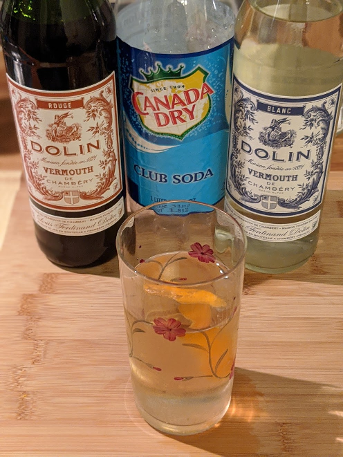
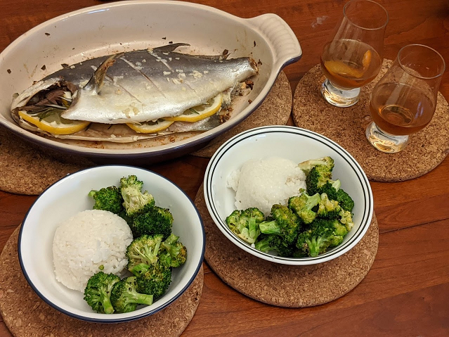

As an early Christmas gift, my wife presented The Savoy Cocktail Book to me. The book is roughly 180 pages of mixed drinks with 5 or 6 drinks on each page. As I was browsing the book last night, a rather silly though struck me:
How about I try to make every cocktail in the book?
It feels like a ridiculous goal to work toward, but I can't shake it from my head. I've rarely ventured away from Bulleit bourbon and wheat beers, so this will be an opportunity to branch out and travel the world of booze (as long as that booze could be crafted by a London hotel barman in 1930).

Figure 1: The Addington Cocktail
Starting with something simple! And even then, I may have missed the "soda" part the first time around.
I've never had vermouth before. Mostly, it tastes as though I've made a mildly sweet, majorly unimpressive champagne. The orange essence hits first and transitions second to an earthy(?) red wine flavor before finishing with a pop of white wine; given the cocktail is, well, exactly that, that's not too surprising. Honestly, I think I used too much club soda because I was left with the impression that I ordered a coke from a fast food joint and they had long since forgotten to replace the empty syrup bag.
I much preferred my first try, where I skipped the soda all together and had a lovely sweet & tangy pairing with the pompano fish my wife had baked.

Figure 2: A delicious lemon rosemary pompano with roasted garlic broccoli and, of course, the Addington cocktail (minus club soda)
With soda: 30%
Without soda: 60%